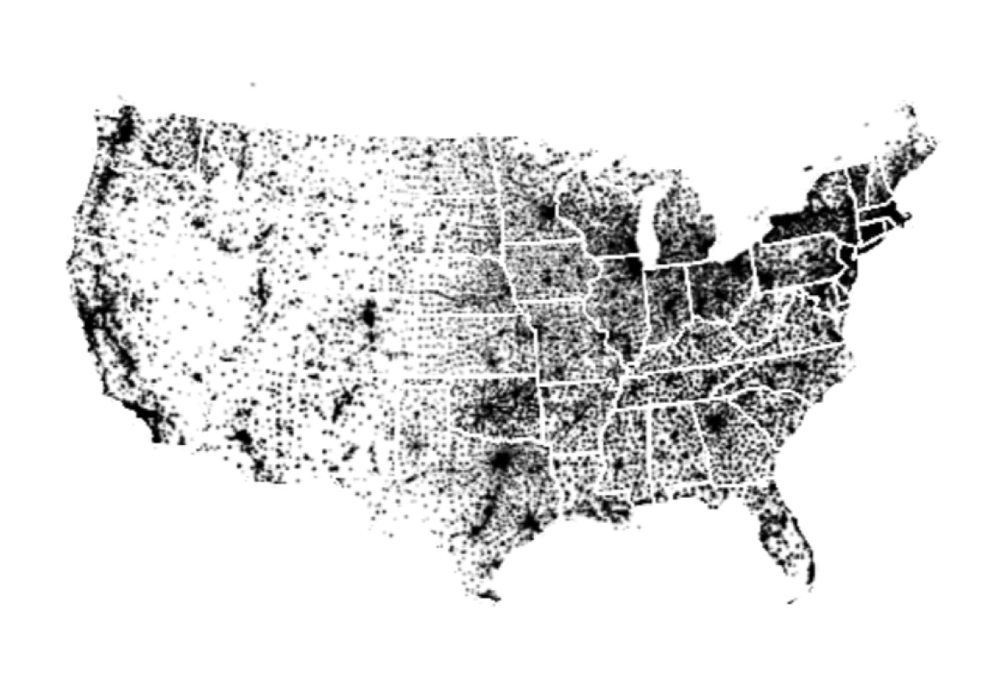

Kevin Gates
UX Designer
Researcher

Hi, I'm Kevin!
I'm a UX designer and researcher with extensive experience in enterprise SaaS and data products.
I've worn many hats. At Google, I was part of a three-person team that built the company's early business intelligence tools. For the Obama 2012 campaign, I designed an app that reached 40 million voters. More recently, I've applied design thinking to cloud computing at Pivotal and global trade logistics at Flexport.
I'm always open to new adventures and meeting like-minded people. Feel free to reach out: kgates@gmail.com
CASE STUDIES

Pivotal
HealthWatch
HealthWatch
Using co-creation and rapid prototyping to design an enterprise analytics product.
Pivotal Developer
Console
Console
How I guided a product team through a large, complex problem space to reimagine developer tool access in the cloud.
KNative Graphical
User Interface
User Interface
Employing a collaborative design process to rethink the UI for KNative, an opinionated open-source developer tool.

Obama for America:
Project Atlas
Project Atlas
How I took a fuzzy idea, wrangled a big data set, and produced a voter-facing app in time for election day.